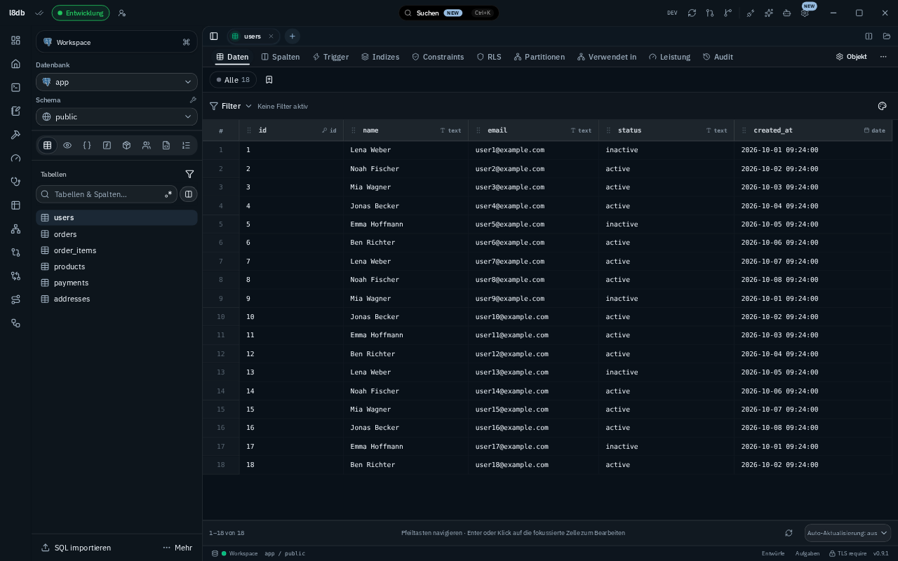

Corporate- und UX-Brief
100 neue Entwürfe für 20 l8db-Ansichten. Die visuelle Identität stammt aus dem laufenden Produkt. Innovation entsteht durch Kontext, Anordnung und den Weg von der Aufgabe zum überprüfbaren Ergebnis.
Aktueller Stil als feste Referenz

Aufnahmen am 8. Oktober 2026 aus dem lokalen Vite-Frontend. Die Tauri-Antworten wurden ausschließlich im isolierten Browser für Beispieldaten simuliert. Produktcode und echte Datenbankverbindungen wurden dafür nicht geändert. Jede Generierung verwendet die passende Aufnahme als Stilreferenz.
background: oklch(0.975 0.004 248)
primary: oklch(0.4 0.045 248)background: oklch(0.175 0.02 248)
primary: oklch(0.78 0.065 248)Quellen der Designbasis: src/index.css, src/lib/db-theme.ts, src/lib/appearance.ts und die Shell-Komponenten. Die tatsächliche Akzent-Chroma wird in themeCssVars() begrenzt. Die abweichenden visuellen Experimente der ersten Sammlung dienen hier nicht als Markenreferenz.
Alle 30 Prinzipien berücksichtigt
Die Sammlung Laws of UX wurde am 8. Oktober 2026 gelesen. Die folgenden eigenen Kriterien übersetzen jedes Prinzip in den l8db-Kontext. Alle Kriterien sind im gemeinsamen Generierungsprompt enthalten; jede Ansicht nennt zusätzlich ihre besonders relevanten Prinzipien.
| Prinzip und Quelle | Kriterium für l8db | Prüfebene |
|---|---|---|
| Aesthetic-Usability Effect | Ruhige, konsistente Oberflächen; Schönheit ersetzt keine klare Bedienung. | Visuell |
| Choice Overload | Werkzeuge nach Aufgabe bündeln; seltene Optionen in Mehr, Hauptaufgaben sichtbar. | Visuell und interaktiv |
| Chunking | Semantische Gruppen für Verbindung, Objekt, Aufgabe und Ergebnis. | Visuell |
| Cognitive Bias | Neutrale Beschriftungen, nachvollziehbare Zahlen, keine irreführenden Voreinstellungen. | Visuell und interaktiv |
| Cognitive Load | Eine dominante Aufgabe; aktives Objekt, Kontext und nächster Schritt erkennbar. | Visuell |
| Doherty Threshold | Laufstatus, Abbrechen und Fortschritt vorsehen; Feedbacklatenz muss später gemessen werden. | Interaktiv; im Bild nur Zustandskonzept |
| Fitts’s Law | Wichtige Ziele ausreichend groß, voneinander getrennt und nahe der Aufgabe platzieren. | Visuell und interaktiv |
| Flow | Arbeitskontext erhalten; störende Modals durch passende Inline-Hilfen ersetzen. | Visuell und interaktiv |
| Goal-Gradient Effect | Bei mehrstufigen Aufgaben reale Schritte und verbleibende Arbeit zeigen. | Visuell und interaktiv |
| Hick’s Law | Aktionen priorisieren und Entscheidungen in verständliche Schritte gliedern. | Visuell |
| Jakob’s Law | Bekannte Desktopmuster, Tabs, Objektbaum und bestehende l8db-Navigation beibehalten. | Visuell |
| Law of Common Region | Zusammengehörige Inhalte in klar abgegrenzten Bereichen. | Visuell |
| Law of Proximity | Beschriftung, Wert und Aktion räumlich zusammenhalten. | Visuell |
| Law of Prägnanz | Einfache Formen und klare Hierarchie statt dekorativer Komplexität. | Visuell |
| Law of Similarity | Gleiche Funktion erhält gleiche Form, Typografie und Zustandsdarstellung. | Visuell |
| Law of Uniform Connectedness | Beziehungen durch beschriftete Linien oder eindeutige Zuordnung zeigen. | Visuell |
| Mental Model | Verbindung → Datenbank → Schema → Objekt bildet die sichtbare Struktur. | Visuell und interaktiv |
| Miller’s Law | Information sinnvoll gruppieren; keine starre Sieben-Elemente-Grenze anwenden. | Visuell |
| Occam’s Razor | Nur Elemente zeigen, die Verständnis oder Ausführung unterstützen. | Visuell |
| Paradox of the Active User | Direkten Einstieg, Beispiele und Hilfe im Arbeitskontext anbieten. | Visuell und interaktiv |
| Pareto Principle | Häufige Aufgaben prominent; Priorisierung später anhand Nutzung prüfen. | Visuell und empirisch |
| Parkinson’s Law | Aufgaben begrenzen und sinnvolle Startwerte anbieten, ohne künstlichen Zeitdruck. | Interaktiv |
| Peak-End Rule | Abschluss mit Ergebnis, Zusammenfassung und sinnvoller Folgeaktion. | Visuell und interaktiv |
| Postel’s Law | Flexible Eingaben mit expliziter Validierung; technische Ausgabe präzise. | Interaktiv; im Bild nur Eingabekonzept |
| Selective Attention | Auswahl und relevante Warnung hervorheben; Hintergrundwerkzeuge zurücknehmen. | Visuell |
| Serial Position Effect | Primäre Schritte am Anfang, Ergebnis und nächste Aktion am Ende. | Visuell |
| Tesler’s Law | System übernimmt Routine, notwendige Komplexität bleibt erreichbar. | Visuell und interaktiv |
| Von Restorff Effect | Eine klare Hauptaktion; Warnfarbe nur für echte Warnungen mit Text und Symbol. | Visuell |
| Working Memory | Vergleichswerte, Filter, Entwürfe und Kontext sichtbar erhalten. | Visuell und interaktiv |
| Zeigarnik Effect | Echte offene Entwürfe und unerledigte Schritte kenntlich machen. | Visuell und interaktiv |
Schwerpunkte je Ansicht
SQL-ArbeitsplatzCognitive Load · Flow · Doherty Threshold · Working Memory
Tabellen-ExplorerLaw of Proximity · Selective Attention · Zeigarnik Effect · Fitts’s Law
ER-DiagrammLaw of Uniform Connectedness · Mental Model · Law of Common Region · Working Memory
Query BuilderTesler’s Law · Chunking · Hick’s Law · Postel’s Law
AusführungsplanCognitive Bias · Law of Uniform Connectedness · Selective Attention · Pareto Principle
Live-MonitorDoherty Threshold · Selective Attention · Cognitive Bias · Law of Proximity
Datenbank-HealthVon Restorff Effect · Pareto Principle · Law of Common Region · Peak-End Rule
DatenbankübersichtMental Model · Chunking · Serial Position Effect · Occam’s Razor
AbfrageverlaufWorking Memory · Zeigarnik Effect · Law of Similarity · Flow
AutomatisierungLaw of Uniform Connectedness · Parkinson’s Law · Goal-Gradient Effect · Postel’s Law
SQL-NotebookFlow · Chunking · Zeigarnik Effect · Peak-End Rule
AI-ArbeitsbereichCognitive Bias · Tesler’s Law · Mental Model · Working Memory
DatenvergleichLaw of Similarity · Working Memory · Selective Attention · Cognitive Bias
Schema-VergleichLaw of Similarity · Law of Common Region · Tesler’s Law · Von Restorff Effect
TransaktionsprüfungZeigarnik Effect · Working Memory · Fitts’s Law · Peak-End Rule
VerbindungenChoice Overload · Postel’s Law · Mental Model · Paradox of the Active User
DatenimportGoal-Gradient Effect · Hick’s Law · Postel’s Law · Tesler’s Law
ObjektspeicherMental Model · Doherty Threshold · Law of Proximity · Working Memory
EinstellungenJakob’s Law · Choice Overload · Law of Common Region · Law of Similarity
MCP und ZugriffMental Model · Cognitive Bias · Chunking · Selective Attention
Was die Bilder prüfen lassen
Visuell beurteilbar sind Hierarchie, Gruppierung, Wiedererkennbarkeit, Auswahl, Statusdarstellung und die Nähe von Kontext und Aktion. Die Rasterbilder zeigen Designabsichten; sie belegen keine funktionierenden Interaktionen, gemessene Feedbackzeiten, Tastaturbedienung oder vollständige Barrierefreiheit. Vor einer Umsetzung müssen Targetgrößen, Kontrast, Fokus, Screenreader, Fehlerbehandlung und Reaktionszeiten am echten Interface geprüft werden. Psychologische Effekte und Nutzungsprioritäten benötigen Nutzertests beziehungsweise Nutzungsdaten.
Die Bilder sind einzeln mit dem integrierten Bildgenerator erzeugt. Schrift, Werte und SQL können in Rasterkonzepten variieren. Verbindliche Beschriftungen und Verhalten stehen im exakten Prompt und in diesem Brief. Prompts und Bildkatalog herunterladen · UX-Kriterien als JSON · Sichtprüfungen und konkrete Grenzen